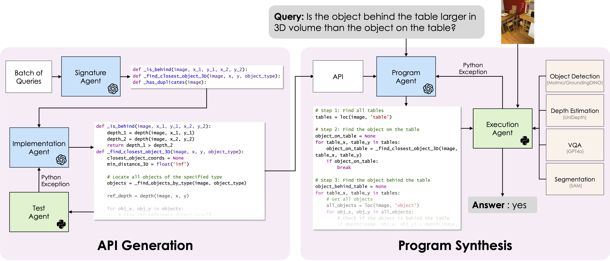
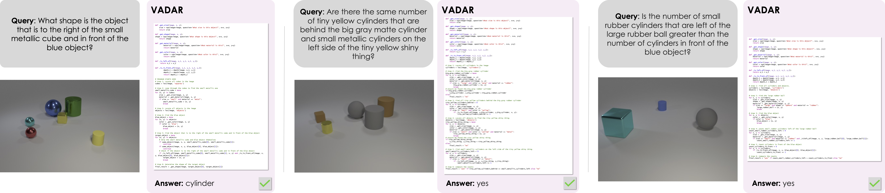
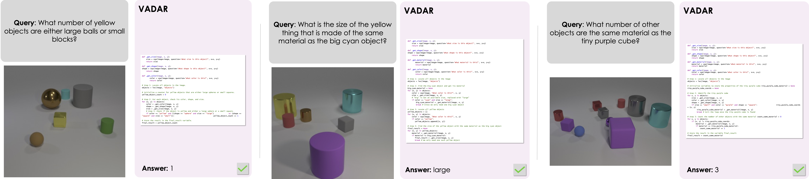

tl;dr VADAR is a new program synthesis approach for 3D spatial reasoning; LLM agents collaboratively generate a Pythonic API to solve common reasoning subproblems and tackle challenging 3D spatial reasoning queries.
Visual reasoning is essential for embodied agents in 3D environments. While vision-language models can answer image-based questions, they struggle with 3D spatial reasoning. To address this, we propose an agentic program synthesis approach where LLM agents collaboratively generate a Pythonic API, enabling dynamic function creation for solving subproblems. Unlike static, human-defined APIs, our method adapts to diverse queries. We also introduce a new benchmark for 3D understanding, requiring multi-step grounding and inference. Our approach outperforms prior zero-shot models, demonstrating its effectiveness for 3D spatial reasoning.
VADAR leverages an agentic program synthesis approach to produce a dynamic API that can be extended to address new queries that require novel skills. The goal of the API is to break down complex reasoning problems into simpler subproblems that can be addressed with vision specialist modules (e.g. Object Detection), and subsequently composed via program synthesis. The generated API is written in Python, and programs are tested and executed with Pythonic Agents.
To avoid the case that the implementation of a signature calls a method that hasn’t been implemented yet, we produce a tree of dependencies and implement our methods with a depth-first traversal.
To further assess AI capabilities for 3D understanding, we introduce a new benchmark of queries involving multiple steps of grounding and inference. Omni3D-Bench features 500 challenging, non-templated queries with images sourced from Omni3D, a dataset of images from diverse real-world scenes with 3D object annotations. Our queries test reasoning in 3D, as they require grounding objects in 3D and combining predicted attributes to reason about distances and dimensions in three dimensions. We show more samples from Omni3D-Bench here.

Here we show some example programs generated by VADAR and the execution output. We suggest zooming in to read the programs clearly!

|

|
|  |
|  |

|

|
We show examples of failure cases below. The most common errors stem from errors of the vision specialist modules (e.g. missed detections, incorrect VQA responses). Severe occlusions are particularly problematic for the vision specialists. Additionally, we find VADAR often struggles with queries that require 5 or more inference steps (e.g. " There is a yellow cylinder to the right of the cube that is behind the purple block; is there a brown object in front of it?" ).

|

|
@inproceedings{Marsili_2025_CVPR,
author = {Marsili, Damiano and Agrawal, Rohun and Yue, Yisong and Gkioxari, Georgia},
title = {Visual Agentic AI for Spatial Reasoning with a Dynamic API},
booktitle = {Proceedings of the Computer Vision and Pattern Recognition Conference (CVPR)},
month = {June},
year = {2025},
pages = {19446-19455}
}